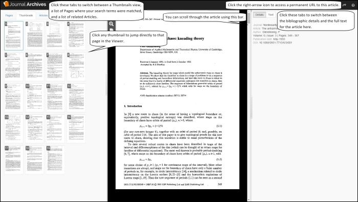
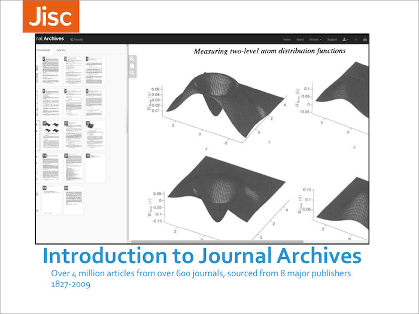

For a quick tour of the key features available please watch our short introductory video.
To help you get started you can download our quick reference guide (PDF, 858KB) to help you get started using Journal Archives.
An introduction to Journal Archives presentation is available as a PPT (5.7MB) or a PDF (3MB) .
